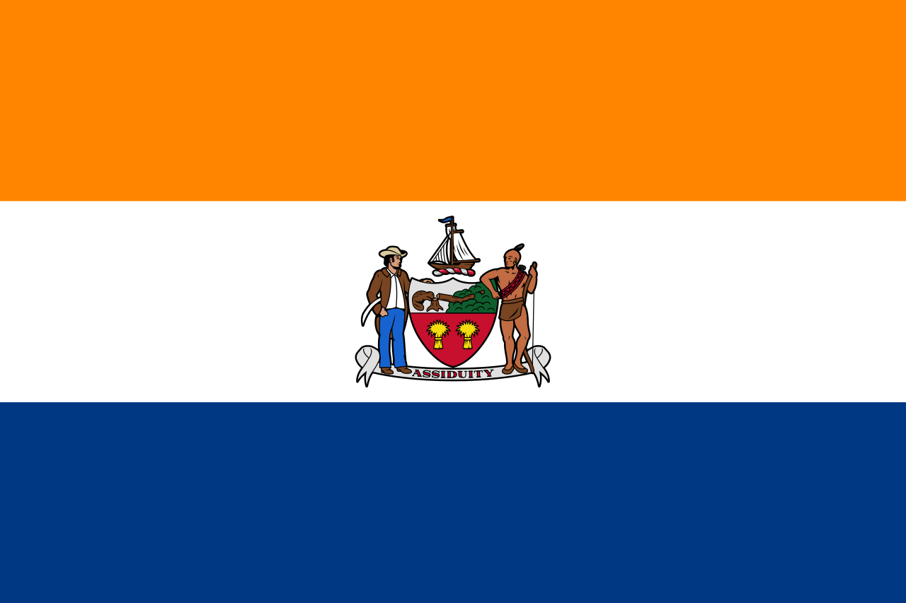
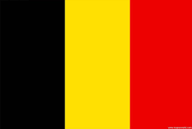

EUROPA
Europa este un continent situat în întregime în emisfera nordică și în cea mai mare parte în emisfera estică. Cuprinde cea mai vestică parte a Eurasiei și este mărginită de Oceanul Arctic la nord, Oceanul Atlantic la vest, Marea Mediterană la sud și de Asia la est. Europa este considerată în mod obișnuit separată de Asia de bazinul hidrografic al Munților Ural, râul Ural, Marea Caspică, Caucazul Mare, Marea Neagră, și căile navigabile ale strâmtorii turcești. Cu toate acestea, granițele pentru Europa, un concept care datează din antichitatea clasică, sunt oarecum arbitrare, deoarece termenul „Europa” se poate referi la o distincție culturală, politică sau geografică.Europa acoperă aproximativ 10.180.000 km2 sau 2 % din suprafața Pământului (6,8 % din suprafața terestră), fiind penultimul continent ca mărime. Din punct de vedere politic, Europa este împărțită în aproximativ cincizeci de state suverane, dintre care Rusia este cea mai mare și mai populată, acoperind 39 % din continent și cuprinzând 15 % din populația sa. Europa avea în 2020 o populație totală estimată la aproximativ 747 de milioane (aproximativ 11 % din populația lumii). Clima Europei este în mare măsură influențată de curenții calzi ai Atlanticului, care duc la ierni și veri temperate pe o mare parte din continent, chiar și la latitudini de-a lungul cărora clima din Asia și America de Nord este severă. Mai departe de ocean, diferențele sezoniere sunt mai vizibile decât în apropierea coastei.
|

|
Lista statelor și teritoriilor
| Nume |
Suprafață |
Populației |
Densitatea populației |
Capitala |
Denumirea în limba oficială |
| Albania |
28.478 |
2.876.591 |
98,5 |
Tirana |
Shqipëria |
Andorra |
468 |
77.281 |
179,8 |
Andorra la Vella |
Andorra |
Armenia |
29.743 |
2.924.816 |
101,5 |
Erevan |
Հայաստան (Hayastan) |
Austria |
83.858 |
8.823.054 |
104 |
Viena |
Österreich |
Azerbaijan |
86.600 |
9.911.646 |
113 |
Baku |
Azǝrbaycan |
Belarus |
207.560 |
9.504.700 |
45,8 |
Minsk |
Беларусь (Belaruś) |
| Belgia |
30.528 |
11.358.357 |
372,06 |
Bruxelles |
België/Belgique/Belgien |
Bosnia și Herzegovina |
51.129 |
3.531.159 |
68,97 |
Sarajevo |
Bosna i Hercegovina/Боснa и Херцеговина |
Bulgaria |
110.910 |
7.101.859 |
64,9 |
Sofia |
България (Bǎlgariya) |
Cipru |
9.251 |
1.170.125 |
123,4 |
Nicosia |
Κύπρος (Kýpros)/Kıbrıs |
Croația |
56.542 |
4.284.889 |
75,8 |
Zagreb |
Hrvatska |
Danemarca |
43.094 |
5.748.796 |
133,9 |
Copenhaga |
Danmark |
Elveția |
41.285 |
8.401.120 |
202 |
Berna |
Schweiz/Suisse/Svizzera/Svizra |
Estonia |
45.226 |
1.319.133 |
28 |
Talin |
Eesti |
Spania |
505.990 |
46.698.151 |
92 |
Madrid |
España |
|
|